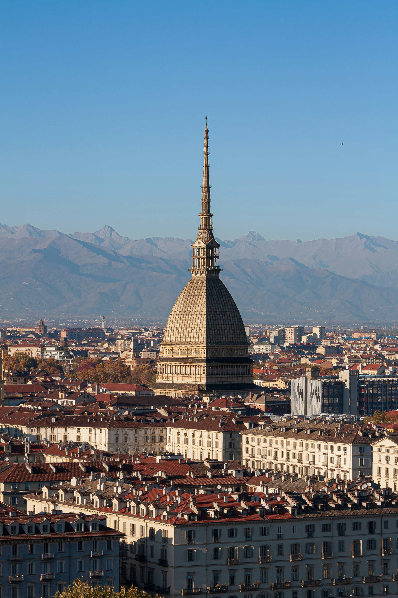

Fondata come castrum romano col nome di Julia Augusta Taurinorum, Torino conserva ancora oggi l'ordinata pianta a scacchiera dell'epoca. La svolta arrivò nel 1563 con il trasferimento della capitale del Ducato di Savoia, trasformandola in una raffinata ed elegante capitale barocca ricca di palazzi e piazze monumentali.
Nell'Ottocento fu il centro del Risorgimento e nel 1861 divenne la prima Capitale del Regno d'Italia. Successivamente la città si è reinventata, affermandosi prima come capitale del cinema e dell'innovazione scientifica, e poi come grande polo industriale. Oggi Torino è una metropoli dinamica che unisce architettura regale, cultura e innovazione.